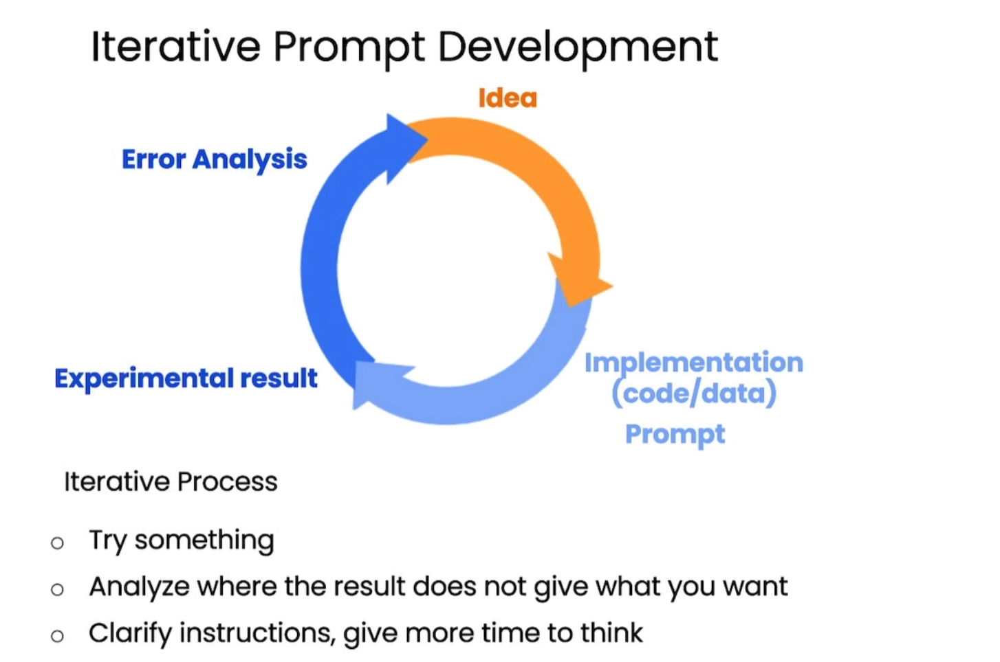
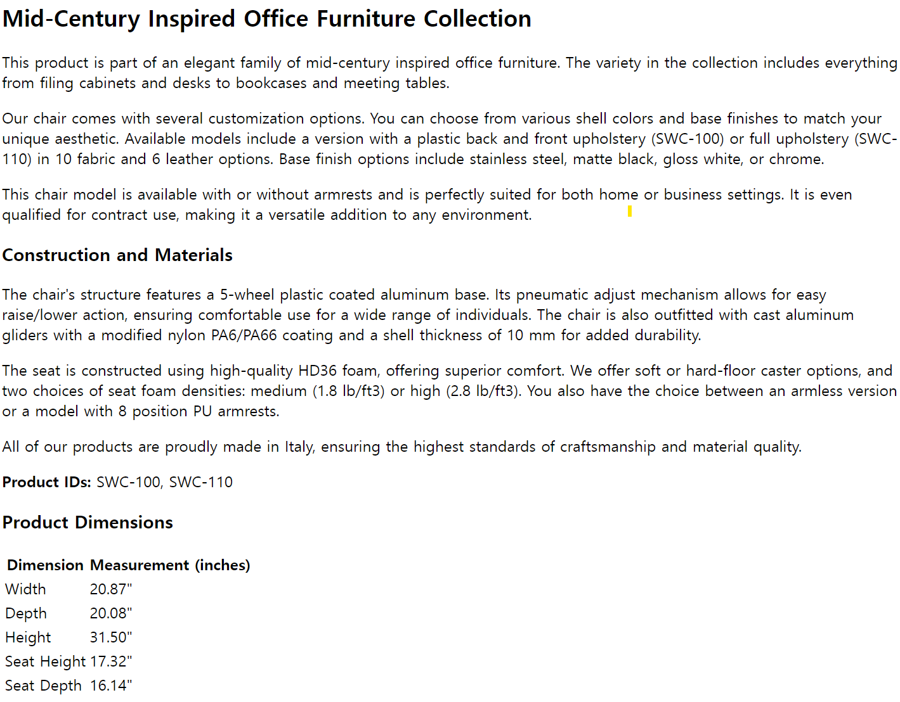

DeepLearning.AI에서 제공하는 ChatGPT Prompt 강좌를 요약한 글입니다. 실제 OpenAI 개발자가 진행하는 강좌이기에, 단순히 이용자의 경험과 감으로 제공되는 prompt 보다 나을 것으로 예상하여 정리합니다.
모든 예시는 GPT 4.0 API로 작성되었습니다.
목차 :
- 프롬프팅의 원칙
- 프롬프트 개발하기
- GPT 기능 활용
이번 문서에서는 프롬프트 개발에 대해 알아보겠습니다.
프롬프트 개발은 iterative하게 프롬프트를 분석하고 수정하는 과정으로 진행됩니다.

아래의 제품의 스펙을 마케팅용 문구로 변환하는 프롬프트를 통해 프롬프트 개발을 진행해보겠습니다.
User
Your task is to help a marketing team create a
description for a retail website of a product based
on a technical fact sheet.
Write a product description based on the information
provided in the technical specifications wrapped by
<>.
Technical specifications:
<OVERVIEW
- Part of a beautiful family of mid-century inspired office furniture,
including filing cabinets, desks, bookcases, meeting tables, and more.
- Several options of shell color and base finishes.
- Available with plastic back and front upholstery (SWC-100)
or full upholstery (SWC-110) in 10 fabric and 6 leather options.
- Base finish options are: stainless steel, matte black,
gloss white, or chrome.
- Chair is available with or without armrests.
- Suitable for home or business settings.
- Qualified for contract use.
CONSTRUCTION
- 5-wheel plastic coated aluminum base.
- Pneumatic chair adjust for easy raise/lower action.
DIMENSIONS
- WIDTH 53 CM | 20.87”
- DEPTH 51 CM | 20.08”
- HEIGHT 80 CM | 31.50”
- SEAT HEIGHT 44 CM | 17.32”
- SEAT DEPTH 41 CM | 16.14”
OPTIONS
- Soft or hard-floor caster options.
- Two choices of seat foam densities:
medium (1.8 lb/ft3) or high (2.8 lb/ft3)
- Armless or 8 position PU armrests
MATERIALS
SHELL BASE GLIDER
- Cast Aluminum with modified nylon PA6/PA66 coating.
- Shell thickness: 10 mm.
SEAT
- HD36 foam
COUNTRY OF ORIGIN - Italy>ChatGPT
Mid-Century Inspired Office Chair
Immerse yourself in the elegance of mid-century design with our chic office chair. As part of an extensive range of office furniture that includes filing cabinets, desks, bookcases, and more, this chair will add a stylish touch to your workspace at home or in the office.
Choose from a myriad of shell color options and base finishes, including stainless steel, matte black, gloss white, and chrome. The chair comes in two versions – with a plastic back and front upholstery (SWC-100), or a full upholstery option (SWC-110). Each version is available in 10 fabric and 6 leather choices, allowing you to customize the chair to perfectly match your interior decor.
Comfort is key with this chair, thanks to its 5-wheel plastic coated aluminum base and pneumatic chair adjustment, allowing easy raise and lower action for the perfect fit. Whether you prefer it with or without armrests, this chair has you covered. Additionally, you have the option of an 8-position PU armrest for even more convenience and comfort.
The chair measures 53cm (20.87") in width, 51cm (20.08") in depth, and 80cm (31.50") in height. The seat height is 44cm (17.32"), and the seat depth is 41cm (16.14"). Select from soft or hard-floor caster options and two seat foam densities, medium (1.8 lb/ft3), or high (2.8 lb/ft3), to cater to your comfort preferences.
The shell base of the chair is crafted from cast aluminum with a modified nylon PA6/PA66 coating, ensuring robustness and durability. The shell thickness is a solid 10mm. The seat is filled with premium HD36 foam, providing excellent comfort for prolonged sitting.
Crafted with finesse in Italy, this office chair effortlessly combines style, functionality, and comfort, making it a valuable addition to any work setting. Suitable for both domestic and business settings, and qualified for contract use, this chair is as versatile as it is beautiful. Upgrade your workspace today with this mid-century inspired office chair.전반적으로 올바르게 동작한듯 하나, 답변이 지나치게 길다는 느낌을 받았습니다.
Use at most 50 words.를 활용하여 답변을 줄여보겠습니다.
User
Your task is to help a marketing team create a
description for a retail website of a product based
on a technical fact sheet.
Write a product description based on the information
provided in the technical specifications wrapped by
<>.
Use at most 50 words.
Technical specifications:
<~생략~>ChatGPT
Experience the elegance of our Italian-made, mid-century inspired office chair. Available in multiple colors and finishes, this versatile chair offers pneumatic adjustments, optional armrests, and customizable foam density for optimal comfort. Durably constructed, it's a stylish addition to any home or business setting.답변이 짧아지긴 하였으나, 제품에 꼭 필요한 정보들을 놓치고 있는 것으로 보입니다.
프롬프트를 다시 수정해보겠습니다.
User
Your task is to help a marketing team create a
description for a retail website of a product based
on a technical fact sheet.
Write a product description based on the information
provided in the technical specifications wrapped by
<>.
The description is intended for furniture retailers,
so should be technical in nature and focus on the
materials the product is constructed from.
Use at most 50 words.
Technical specifications:
<~생략~>ChatGPT
This Italian-crafted, mid-century inspired office chair is constructed with a 5-wheel aluminum base coated in plastic, a 10mm shell made of cast aluminum with a modified nylon PA6/PA66 coating, and a seat cushioned with HD36 foam. Upholstery options include 10 fabrics and 6 leathers.더 나아가서 웹 페이지에 해당 제품을 등록시키기 위한 HTML이 필요하다고 가정해봅시다.
User
Your task is to help a marketing team create a
description for a retail website of a product based
on a technical fact sheet.
Write a product description based on the information
provided in the technical specifications wrapped by
<>.
The description is intended for furniture retailers,
so should be technical in nature and focus on the
materials the product is constructed from.
At the end of the description, include every 7-character
Product ID in the technical specification.
After the description, include a table that gives the
product's dimensions. The table should have two columns.
In the first column include the name of the dimension.
In the second column include the measurements in inches only.
Give the table the title 'Product Dimensions'.
Format everything as HTML that can be used in a website.
Place the description in a <div> element.
Technical specifications:
<~생략~><div>
<h2>Mid-Century Inspired Office Furniture Collection</h2>
<p>This product is part of an elegant family of mid-century inspired office furniture. The variety in the collection includes everything from filing cabinets and desks to bookcases and meeting tables.</p>
<p>Our chair comes with several customization options. You can choose from various shell colors and base finishes to match your unique aesthetic. Available models include a version with a plastic back and front upholstery (SWC-100) or full upholstery (SWC-110) in 10 fabric and 6 leather options. Base finish options include stainless steel, matte black, gloss white, or chrome.</p>
<p>This chair model is available with or without armrests and is perfectly suited for both home or business settings. It is even qualified for contract use, making it a versatile addition to any environment.</p>
<h3>Construction and Materials</h3>
<p>The chair's structure features a 5-wheel plastic coated aluminum base. Its pneumatic adjust mechanism allows for easy raise/lower action, ensuring comfortable use for a wide range of individuals. The chair is also outfitted with cast aluminum gliders with a modified nylon PA6/PA66 coating and a shell thickness of 10 mm for added durability.</p>
<p>The seat is constructed using high-quality HD36 foam, offering superior comfort. We offer soft or hard-floor caster options, and two choices of seat foam densities: medium (1.8 lb/ft3) or high (2.8 lb/ft3). You also have the choice between an armless version or a model with 8 position PU armrests.</p>
<p>All of our products are proudly made in Italy, ensuring the highest standards of craftsmanship and material quality.</p>
<p><strong>Product IDs:</strong> SWC-100, SWC-110</p>
<h3>Product Dimensions</h3>
<table>
<tr><th>Dimension</th><th>Measurement (inches)</th></tr>
<tr><td>Width</td><td>20.87"</td></tr>
<tr><td>Depth</td><td>20.08"</td></tr>
<tr><td>Height</td><td>31.50"</td></tr>
<tr><td>Seat Height</td><td>17.32"</td></tr>
<tr><td>Seat Depth</td><td>16.14"</td></tr>
</table>
</div>